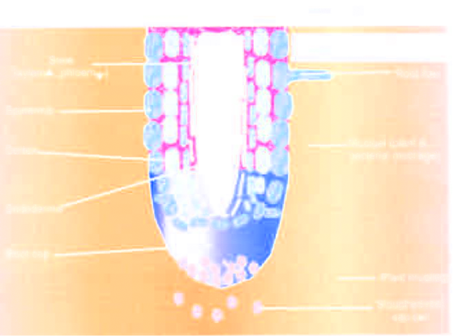

Terreno
Il terreno (o suolo lt. solum pavimento) è una formazione naturale di superficie, di spessore variabile, che si origina dalla disgregazione fisica e dalla decomposizione chimica e biologica della roccia madre e dei residui vegetali ed animali costituenti la lettiera. I principali fattori che contribuiscono alla formazione di un suolo sono:
il clima del posto (temperatura,umidità, piovosità, ecc.);
l'attività degli organismi viventi (piante, animali, microrganismi, uomo);
le caratteristiche della roccia madre (materiale di partenza);
la pendenza del versante, il rilievo, l'esposizione;
tempo trascorso da quando è cominciata la formazione del suolo (età del suolo).

L'azione diversamente combinata e modulata di questi fattori fa sì che, partendo dalla stessa roccia madre, si possano originare suoli diversi, così come, partendo da rocce madri
diverse, si possano originare terreni simili. Il suolo si forma grazie ad una serie di eventi: alcuni sono consecutivi, altri contemporanei. Dalla disgregazione fisica della roccia madre (causata dagli sbalzi di temperatura, dal gelo e disgelo, dall'alternanza di periodi umidi e secchi, dall'azione meccanica delle radici) si originano pietre, sassi, ghiaia, sabbia e limo. Dalla decomposizione chimica e biologica dei minerali della roccia madre (causata dall'acqua piovana acidificata dalla CO2, dall'acidità delle sostanze umiche, dalle sostanze acide e basiche secrete dalle radici e dai microrganismi) si originano le argille (cariche negativamente) e si liberano ioni (Ca2+, Mg2+, K+, PO43-, SO42-, ecc.).
La presenza di vita nel terreno dà luogo ad un arricchimento di sostanza organica dalla cui decomposizione e trasformazione si originano le sostanze umiche (anch'esse cariche negativamente).
Con l'aiuto del calcio, del ferro e dell'alluminio, le argille e le sostanze umiche s'incontrano e formano il complesso argillo-umico.
Grandi protagonisti di questa fase sono soprattutto i lombrichi che nel proprio apparato digerente mescolano il terreno con i residui vegetali. Il complesso argillo-umico è la base per la formazione della struttura del terreno e la nutrizione minerale delle piante: grazie alla carica elettrica superficiale funziona come centro di raccolta e di scambio per ioni ed acqua e si coordina con le altre particelle del terreno formando aggregati che lasciano spazi liberi (pori) per la circolazione dell'aria, dell'acqua e per l'accrescimento delle radici.
L'abbondanza delle varie frazioni granulometriche dà al terreno caratteristiche particolari che incidono su LAVORABILITÀ, POROSITÀ e PERMEABILITÀ. Esempio l'argilla rende il terreno pesante e difficilmente lavorabile e poco permeabile dove l'acqua ci ristagna; se prevale la sabbia, invece, si hanno i TERRENI SCIOLTI dove l'acqua non è trattenuta e che si asciugano immediatamente.
La rizosfera
La rizosfera (dal greco rhìzo=radice; sphàira=sfera) è la porzione di suolo che circonda le radici delle piante, da cui assorbono i nutrienti essenziali e l'acqua necessaria per crescere. Presenti nella rizosfera oltre alle radici, ulteriori componenti biotiche quali ad esempio: microorganismi simbiontici, batteri benefici e patogeni, funghi micro e macroscopici. La rizosfera è stata descritta come il volume di suolo influenzato dalle radici. Si estende approssimativamente per 1-3 mm intorno alla superficie radicale (Shimp, et al., 1993; Schnook, 1998; McNear Jr., 2013). Dal momento che le piante, attraverso gli essudati radicali, forniscono una fonte di energia per la comunità microbica del terreno, la proliferazione dei microrganismi all’interno della rizosfera può essere di 3 o 4 volte maggiore rispetto ad un suolo non vegetato (ITRC, 2001).
Clay - Argilla
Clay minerals have some of their silico (IV) and aluminium (III) replaced by metal ions of a similar size but lower charge, e.g. Mg2+, attaining a net negative charge.
This is balanced by cations held at the surfaces of the clay layers. The cations are hydrated and give clay its sticky feel. These cations are not part of the crystalline structure, and they are exchangeable for other cations in the aqueous solution is soil. The amount of exchangeable cations in a clay is called the cation-exchange capacity. It is expressed as the amount of monovalent cations per kg of clay (i.e. amount of Na+/mol + 1/2 amount of Mg2+/mol + 1/3 amount Al3+/mol). Typical values (mol kg−1) are kaolinite 0.3, montmorillonite 1.0, vermiculite 1.5, humus 1.5-3.0, soil 0.02-0.6. The adsorbed ions are important in plant nutrition. If plant roots take potassium ions out of the soil, more potassium ions can be released from adsorption to clay.
The cation exchange capacity is of major importance in the ability of a soil to supply nutrients to plants. Between clay and the water present in soil, exchanges of the following type take place:
Ca2+ (clay) + H2O (l) ⇌ 2H+ (clay) + Ca2+ (aq) + 2OH− (aq)
Soil pH: From the equilibrium above we understand that soil becomes gradually more acidic in the natural course of events. Cations are removed by plants or by leaching, the equilibrium moves from left to right. The H+ formed are not taken up by plants; they accumulate and the pH falls. The oxidation of minerals such as pyrite, FeS2, in soild causes also a rise in acidity:
2FeS2 + 7O2(g) + 2H2O (l) ⟶ 2Fe2+ (aq) + 4H+ (aq) + 4SO42− (aq)
In addition FeS2 reacts with acidi to form H2S which is toxic to plant roots.
Metal cations and ammonium cations accumulate in soil solution. From the solution they can be either absorbed by plants or washed out by rain and lost. If the cations were not held bt clay or humus, they would be free in the soil solution and liable to be easily washed out by rain.
Ion exchange is reversible, the reiction depending on the concentrations of the ions and the relative strenghts of their bonds to the clay. Plant roots draw nuetrients from soil solution. If plant roots are withdrawing ammonium ions from soil solution, the equilibrium moves from right to left and ammonium ions are released by the clay.
Ammonium ions are more strongly bound to soil than nitrate ions. When nitrate fertilisers are added, some of the nitrate is taken in by plants and the excess is rapidly leached from the soil. When ammonium fertilisers are added, some of the nitrate is taken in by plants and the excess is rapidly leached from the soil. When ammonium fertilisers are added, ammonium ions are bound to the soil and gradually oxidised to nitrate ions:
NH4+ + O2 (g) ⟶ 4NO3− (aq) + 8H+ (aq) + 4H2O (l)
The reactions increases the acidity of the soil. If the soil acidity becomes too high the reverse reaction, the reduction of nitrate to ammonium ions is promoted.
Humus
Porzione della SOM di colore scuro, di dimensioni colloidali, ad elevata superficie specifica e peso molecolare, con carica negativa, capace di adsorbire reversibilmente acqua, ioni e
piccole molecole organiche, resistente alla mineralizzazione, con attività chelante e biostimolante, che deriva da processi di risintesi e policondensazione di molecole generate dalla
profonda trasformazione nel suolo delle necromasse vegetali, animali e microbiche con il concorso di reazioni biotiche e abiotiche.
L'humus costituisce fino all’85% (p/p) della SOM.
L'humus è in realtà costituito da frazioni chimicamente eterogenee dette complessivamente sostanze umiche (HS): umina, acidi umici, acidi fulvici.
Humic substances are classified into three main categories, according to their solubility in water.
Fulvic acids (FAs): soluble in water at all pH values present in aqueous and subsurface soil einvoronments; average m.w. less than 2000 Da; average lenght of macromolecules of 60 nm and average diameter 2 nm; FAs play an important role in the sequestration and transport of metals in the environment by complexing with metal ions being rich in metal binding, oxygen containing functional groups like carboxylic, phenolic and aliphatic alcoholic groups. Among these functional groups, carboxylate group is particularly responsible for FA-metal binding either by ion exchange, thus formining fulvates (RCOO−M+) or by the formation of chelated metal comples using active bidentate oxygen ligand sites in RCOO− anions;
Humic acids (HAs): insoluble at acidic pH values (pH < 2) and soluble at higher pH levels; average m.w. 2000-5000 Da; chemical structure dominated by phenol groups and long carboxylic fatty acids, more hydrophobic in comparison with fulvic acids; Humic substances may chelate multivalent cations such as Mg2+, Ca2+ and Fe2+;
Humins: insoluble at all pH values; consist mainly of bitumens, coupled with fatty acids and humic acids.
La Tessitura
Con il termine tessitura si indica la composizione granulometrica del terreno, vale a dire il contenuto percentuale in sabbia, limo e argilla:
Scheletro → particelle con diametro superiore a 2 mm.
Sabbia → particelle con diametro compreso tra 2 mm e 0,02 mm.
Limo → particelle con diametro compreso tra 0,02 mm. e 0,002 mm.
Argilla → particelle con diametro inferiore a 0,002 mm.